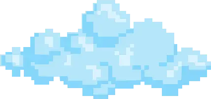

Requirements:
Minecraft 1.21.1
NeoForge 21.1.230
IP Address: pl1.epichost.pl:10479
| 1. Another Furniture | |
| 2. Architectury API | |
| 3. bad packets | |
| 4. Beans Backpacks | |
| 5. Concurrent Chunk Management Engine | |
| 6. Collective | |
| 7. Create | |
| 8. CreativeCore | |
| 9. Ecologics | |
| 10. Etched | |
| 11. Every Compat (Wood Good) | |
| 12. Exposure | |
| 13. Farmer's Delight | |
| 14. FerriteCore | |
| 15. FTB Chunks | |
| 16. FTB Library | |
| 17. FTB Teams | |
| 18. GeckoLib | |
| 19. Geophilic | |
| 20. Just Enough Items (JEI) | |
| 21. Just Player Heads | |
| 22. Lithium | |
| 23. Lithostitched | |
| 24. Mannequins | |
| 25. ModernFix | |
| 26. Moonlight Lib | |
| 27. Mowzie's Mobs | |
| 28. Naturalist | |
| 29. Nirvana | |
| 30. Not Enough Recipe Book [NERB] | |
| 31. Nyf's Spiders | |
| 32. ShatterLib | OctoLib | |
| 33. PlayerRevive | |
| 34. Ribbits | |
| 35. ScalableLux | |
| 36. Skin Restorer | |
| 37. Sodium | |
| 38. Structory | |
| 39. Structory: Towers | |
| 40. Tectonic | |
| 41. TerraBlender | |
| 42. vista | |
| 43. WTHIT | |
| 44. YUNG's API | |
| 45. YUNG's Better Caves | |
| 46. YUNG's Better Desert Temples | |
| 47. YUNG's Better Dungeons | |
| 48. YUNG's Better End Island | |
| 49. YUNG's Better Jungle Temples | |
| 50. YUNG's Better Mineshafts | |
| 51. YUNG's Better Nether Fortresses | |
| 52. YUNG's Better Ocean Monuments | |
| 53. YUNG's Better Strongholds | |
| 54. YUNG's Better Witch Huts | |
| 55. YUNG's Cave Biomes | |
| 56. YUNG's Extras |